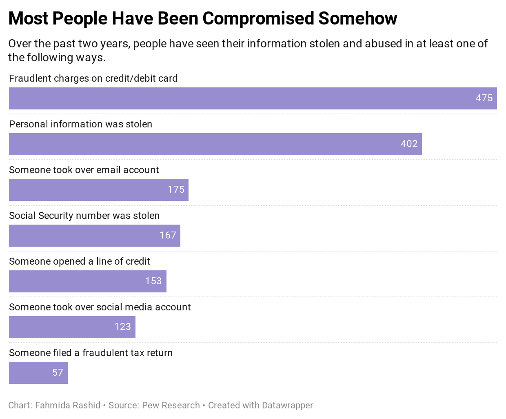
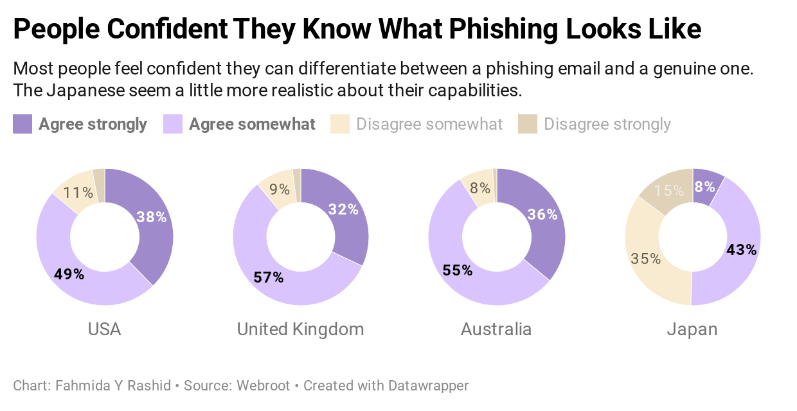
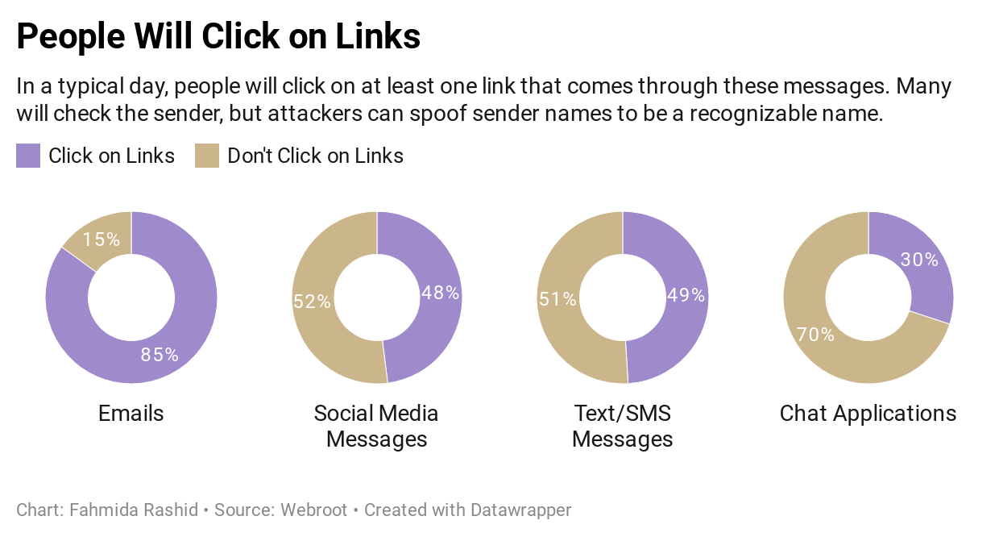
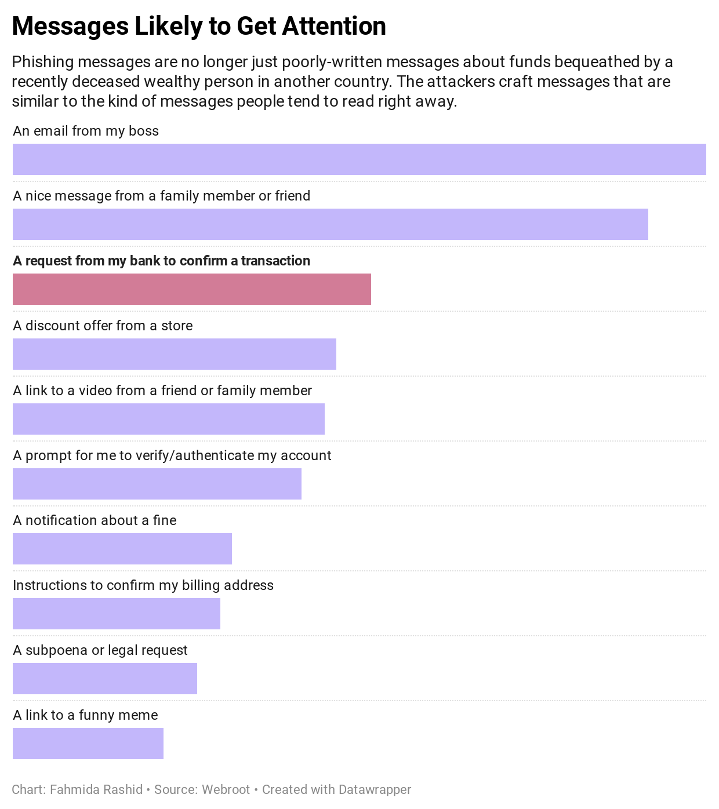
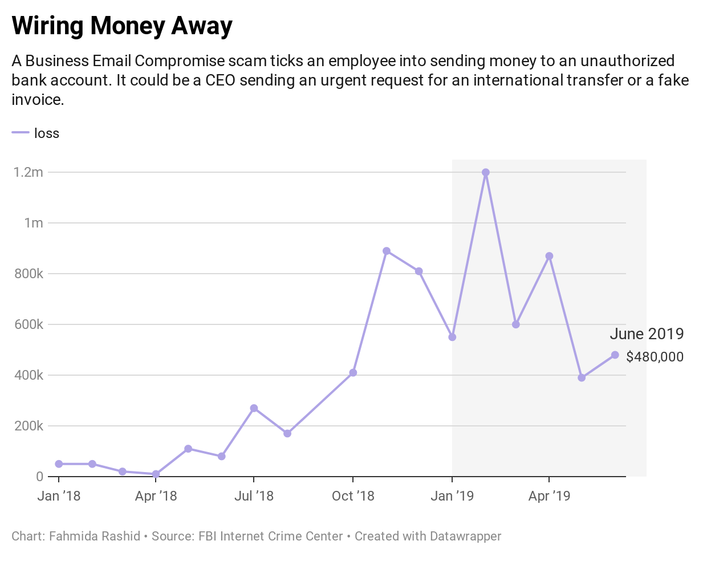
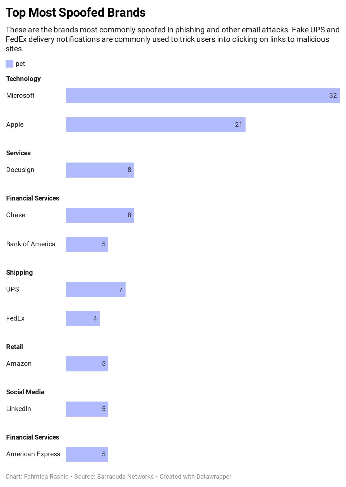
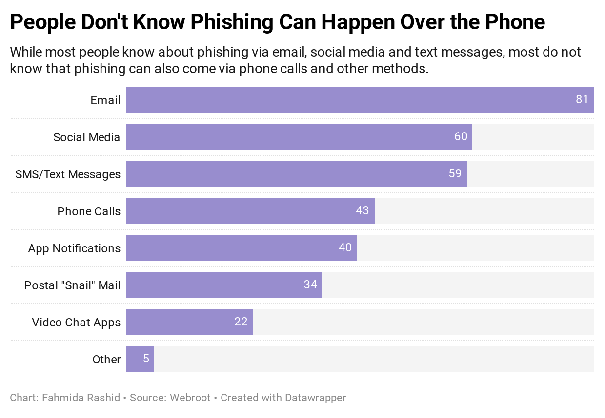

It's fast becoming old news, with data breach after data breach. Cyber-criminals are tricking users into giving up their passwords via phishing. Companies aren't protecting the information they collect from users, and criminals are taking advantage of the lax protections to steal the information. According to the latest figures from Pew Research, most people have been affected by at least one kind of data compromise.

It is very easy to get into victim-blaming, that the user should have done something differently. Attackers spend time crafting very specific messages designed to trick their victims. Blaming the user for falling for an attack ignores the fact that they are just human.
What Phishing Attacks Look Like
There is a tendency to blame the victim for falling for an online scam or a phishing message. The fact is, most of these attacks are not poorly-written missives promising a large monetary windfall or some kind of a prize. Phishing attacks come in many forms and use different types of lures. The goal is to get the victim to download something or click a link. Even people who consider themselves savvy can fall for an attack.
     
Calvin Has a Hard Day
Calvin Harris considers himself pretty savvy about technology. He reads cybersecurity and privacy news. His company has mandatory security awareness training for everyone. He pays attention when he is online.
His day starts with him sleeping through the alarm and his irate boss calling him on the phone. There is a team meeting in his office to get ready for a big department-wise presentation that afternoon and Calvin isn't there. Calvin apologizes as he rushes to get ready and assures his boss he is on the way and that the presentation wouldn't be a problem.
While on the way in, Calvin checks his email messages and sees a series of irate messages from his teammates and boss. When he gets to his desk, he notices an email with a PowerPoint presentation and a short message, "For your review." He doesn't recognize the name of the sender, but he remembers that a co-worker has a new executive assistant. He tries to open the file but it is blank. He makes a note to ask for the presentation later, but he now needs to get to his boss's office.
At the department meeting, the presentation was a disaster because Calvin wasn't prepared. After the presentation, Calvin felt his phone buzz, indicating there was a text message. He checked quickly under the table, and saw a message from HSBC saying, "We have identified an unusual login attempt on your online banking. Log in via the secure link to avoid account suspension."
Calvin was concerned, and tapped the link in the message to log in to his account. He didn't see anything wrong and made a mental note to call the bank later to follow up.
After the meeting, Calvin felt really guilty about letting his team down. He vowed to do better with the next project. While working through the project, he got an email invoice from the agency his team works with occassionally. He uploaded the invoice to the financial application, checked the invoice amount, and approved it for payment.
While watching TV, Calvin received an email about a delivery exception from FedEx. He was waiting for new pedals for his electric guitar. When he clicked on the link to find out what went wrong, he saw an invoice from FedEx because he hadn't paid enough for shipping. He immediately got his credit card out and paid the balance.
Calvin had good intentions but he made a lot of mistakes. The blank PowerPoint presentation was malware which compromised his machine and infected several others on the network. The HSBC alert was fake. By entering the login information to check his account, he had given the criminals access to his bank account. A week later, he would receive an invoice from the agency and learn that the invoice he had approved was also a phish, and the money had gone to an unknown bank account. And while he normally would have thought twice about the delivery notification, he wasn't at his best that day and he really, really, was looking forward to those guitar pedals.
Many people don't realize that phishing isn't just about email. They can come in all forms.
Falling for a scam, or getting compromised doesn't automatically mean bad things have to happen. Entering username and password into a phishing page doesn't automatically mean losing control of the account. Two-factor authentication, or putting a second layer of authentication after the password which requires something the user has (such as a phone) can stop a lot of phishing attacks.
Recent Google research found that an SMS code sent to a recovery phone number blocked 100 percent of attacks by automated bots, 96 percent of bulk phishing attacks (send a general message to a wide group of victims), and 76 percent of targeted attacks (the messages are customized to the victim). The figure for targeted attacks get better with other methods, such as on-device prompts, and hardware keys.
Another good defense is not using the same password across sites. A team of researchers out of Virginia Tech analyzed the passwords for nearly 30 million users and found that 52 percent had reused the password at least once.
All the data files, reports, and code used for analysis (Jupyter Notebook) can be found at the project's repository on GitHub.